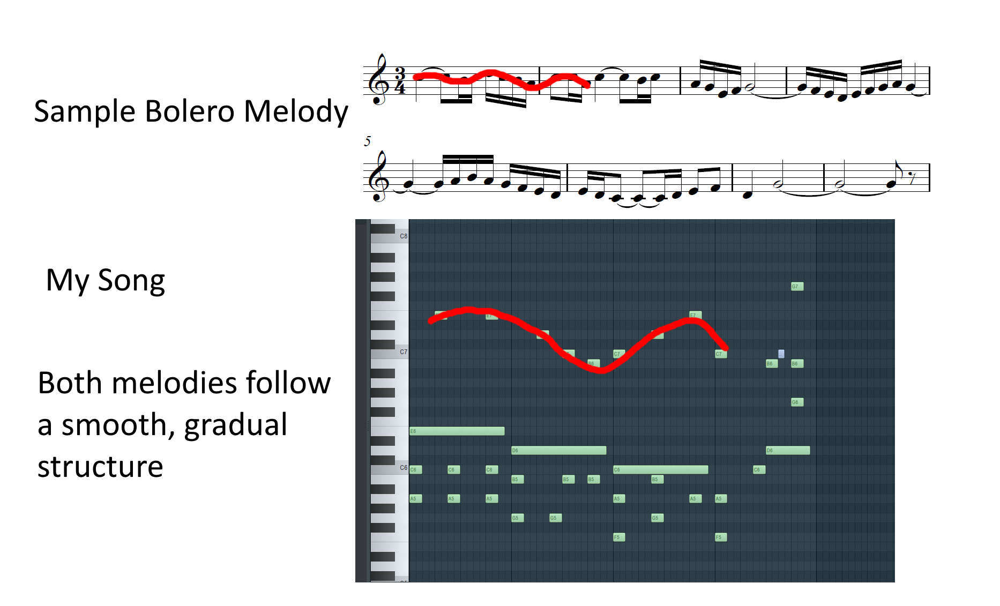
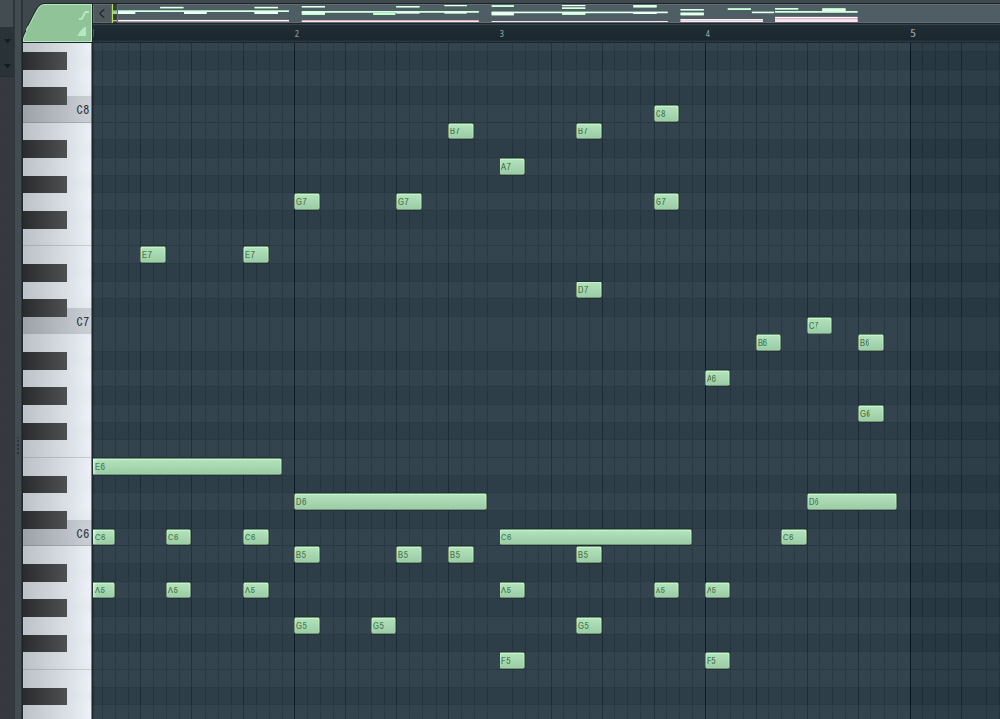
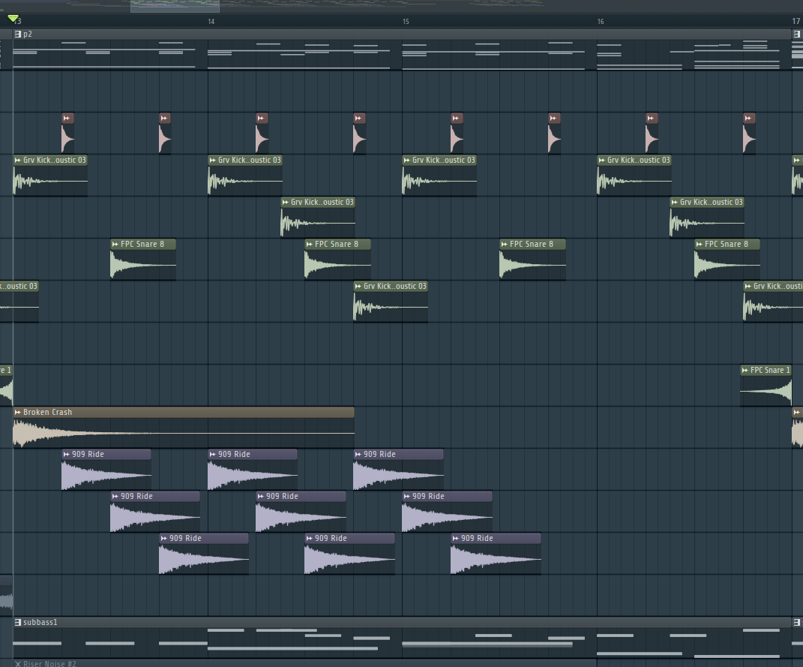

Reflections and musical experiments inspired by my Latin American music course. This artifact demonstrates cultural openness, creative integration, and personal transformation through exposure to new styles.
Full song #1
Full song #2